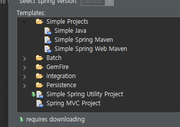
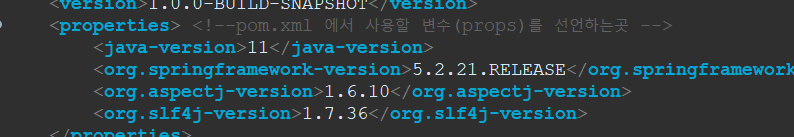
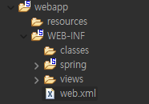

-
Module이란
모듈화를 통해 분리된 시스템의
기능들로,서브루틴,서브시스템함수,method등을 말한다.
-
Module의 결합도:모듈 간에 상호 의존하는 정도 또는 모듈 사이의 연관
관계
-
Module의 응집도
1정보 은닉 개념을 확장한 것으로,명령이나 호출문 등 모둘의 내부
요소들의 소로 관련되어 있는 정도
2.모듈이 독집적인 기능으로 정의 되어 있는 정도의 의미
-
잘 설계된 Moduled은?
1.결합도는 낮고,응집도는 높아야 한다.
스프링 프레임워크
- 프레임워크:큰프로젝트를 할때 많이사용,틀이만들어져있음
-
스프링Legacy(레가시프로젝트)mvc: 스프링도구를 사용하며 프로젝트를 만듬
-
전통적인mvc(패턴)프로젝트:프로젝트가 커질수록 효과적,많이쓰임,클래스를
다른방식으로사용,객체를 빈으로 부름
- boot(패턴)프로젝트:mvc보다 가벼움
- 
프로젝트 탬플릿을 보여준다 mvc
-
pom.xml:jdk도구들을 쉽게 관리해주는 파일,필요한내용을 작성하면 그거에
맞춰 구성됨

- modem:문서의 형식 구성들
- properties:pom.xml 에서 사용할 변수(props)를 선언하는곳
- 스프링 버전 5.2.21.RELEASE 사용

-
was:웹어플리케이션 서버 프로젝트 (webapp에 들어있는 친구들은
보안이약함) 그래서WEB-INF에 넣어줘야함
- 스프링은 main메소드 없음 하지만
- @keyword:웹이 서버에 요청하면 제일먼저 받는친구
- hello hello프로젝트가 작동되고있니찾음 /로요청을할테니 알려줘
- /score :
- rendering:
- GET ?변수=값&
- POST body에 실어서나옴 메소드방식을 POST로해야함
- 404:아예처리할수없다.
- 405:경로는 알고있지만 헷깔려서 처리할수없음 일치하는게없다
- 400:숫자형 변수를 사용했을떄 숫자가 아닌값이 들어갈경우
- 500:서버가실행되다가 exception이 발생함
정보처리기사
- 폭포수모델설계법: 타당성조사-요구분석-설계-개발-테스트-배포-유지보수(비용이 많이발생한다)그래서 소프트웨어의 위기라고한다. (개발자중심)
- 나선형 모델:폭포수 모형과 프로토 타입 모형의 장점에 위험분석 기능을 추가
- 프로토타입:폭포수 모형의 단점을 보완하기 위한 모형
- 애자일기법 : 고객과 소통에 초점을 맞춘 방법, 스크럼.
- XP프로그래밍:애자일과 비슷 수시로 고객과 소통
- 고려해야할사항:가용성(가격대비 성능이좋은지),성능,상호호환성(기존의 시스템과 잘 호환이 되는지),구축비용,기술지원(고장이났을때 얼마나 빨리 고칠수있는지)
- DBMS(소프트웨어종류):Oraclel,MysQL,MSSQL,prostgress
- webserver(소프트웨어):Apache2,nginx,IIS
- WAS(소프트웨어):Tomcaat(이것만 오픈소스) weblogix,J Boss,jetty
- open sourse:소스자체가 공개된 프로그램
- 공개 sw:알집 이미 만들어진 완성품
- 쉐어웨어:처음엔 일부공짜이다가 나중에 유료화됨
- DFD:성적데이터를 입력받아서 그데이터의 총점을 계산하고 평균을 계산 수석이누구인가 (데이터흐름중심으로)
- 자료사전:메타데이터라고부름